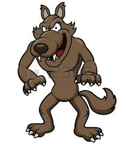

Mi primer imagen lobo 
LinkMi segundo imagen
Mi tercer imagen
Un libro (del latín liber, libri) es una obra impresa, manuscrita o pintada en una serie de hojas de papel, pergamino, vitela u otro material, unidas por un lado (es decir, encuadernadas) y protegidas con tapas, también llamadas cubiertas. Un libro puede tratar sobre cualquier tema. Según la definición de la Unesco,1 un libro debe poseer 49 o más páginas (25 hojas o más), pues desde cinco hasta 48 páginas sería un folleto (desde tres hasta 24 hojas), y desde una hasta cuatro páginas se consideran hojas sueltas (en una o dos hojas). También se llama "libro" a una obra de gran extensión publicada en varias unidades independientes, llamados "tomos" o "volúmenes". Otras veces se llama también "libro" a cada una de las partes de una obra, aunque físicamente se publiquen todas en un mismo volumen (ejemplo: Libros de la Biblia). Hoy en día, no obstante, esta definición no queda circunscrita al mundo impreso o de los soportes físicos, dada la aparición y auge de los nuevos formatos documentales y especialmente de la World Wide Web. El libro digital o libro electrónico, conocido como e-book, está viendo incrementado su uso en el mundo del libro y en la práctica profesional bibliotecaria y documental. Además, el libro también puede encontrarse en formato audio, en cuyo caso se denomina audiolibro.
Lista Sin Ordenar:
Lista Ordenada
Como es habitual, la propiedad permite indicar de uno a cuatro valores diferentes y las reglas de aplicación son las habituales de las propiedades "shorthand".
CSS define numerosas propiedades para modificar la apariencia del texto
| Nombre | Edad | |
|---|---|---|
| Nicolas | 27 | |
| Juan | 31 | |
| Felipe | 19 |
Llenar la siguiente encuesta